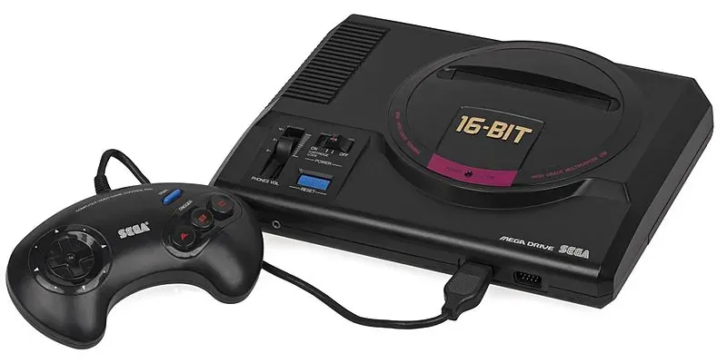

1988 年发布
Sega Mega Drive (Genesis)
16位主机之王 · 索尼克诞生 · Blast Processing
~4000万
全球销量
16位
CPU
7.67MHz
CPU频率
¥21,000
日元价格
📖 历史与背景
1988年10月29日，世嘉在日本发布Mega Drive——全球首款16位家用游戏主机（早于SFC两年）。Mega Drive搭载了摩托罗拉68000 16位CPU（7.67MHz）和Z80协处理器的组合，在2D游戏渲染速度和色彩表现上超过了8位主机。
MD在北美以"Sega Genesis"为名发售（1989年），世嘉用激进的营销策略挑战任天堂的霸主地位。"Genesis does what Nintendon't"（世嘉能做任天堂做不了的）成为游戏史上最著名的广告语之一。1991年《索尼克》（Sonic the Hedgehog）的推出彻底引爆了Genesis的销量——蓝色刺猬索尼克以极快的速度感直接对标马里奥的"缓慢"风格。
MD的全球销量约为4000万台（含Tectoy在巴西生产的兼容机），在美国获得了约一半的16位主机市场份额。MD在日本本土表现不佳（被SFC碾压），但在欧美市场具有极强的影响力。
⚙️ 硬件规格
CPU
MC68000 16位 7.67MHz
协处理器
Z80 8位 3.58MHz
色彩
同屏64色（库512色）
内存
64KB + 64KB VRAM
分辨率
320×224 / 256×224
音效
YM2612 FM + SN76489 PSG
介质
卡带（最高4MB）
手柄
3键 / 6键 控制器
🎮 经典游戏阵容
索尼克2
1992
引入塔尔和旋转冲刺
怒之铁拳2
1992
经典清版动作，音乐神级
幽游白书 魔强统一战
1994
MD最好格斗游戏之一
梦幻之星IV
1993
MD上最佳RPG
火枪英雄
1993
财宝社出品，动作设计巅峰
光明力量2
1993
战棋RPG，深受中国玩家喜爱
街头霸王2
1993
6键手柄的完美适配
蚯蚓战士
1994
美式幽默，画面独特
💡 趣闻与冷知识
- MD的"Blast Processing"（爆炸处理）是纯营销话术——世嘉用它来形容MD CPU速度比SFC快（事实如此），但"Blast Processing"根本不是一项技术
- MD在巴西至今仍被生产：Tectoy公司在巴西持续生产MD兼容机，甚至推出了带USB/SD卡槽的现代版MD
- MD的6键手柄是后来为格斗游戏专门推出的——《街头霸王2》需要6个按键（拳脚各三），而初版MD只有3键
- Mega CD（1991）和32X（1994）是MD的扩展配件，但商业上都很失败——特别是在32X推出的同年，世嘉还发布了Saturn